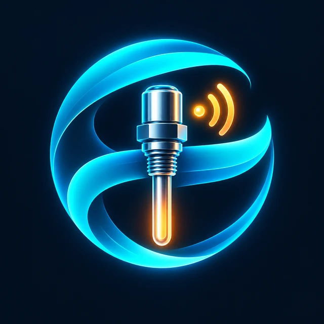
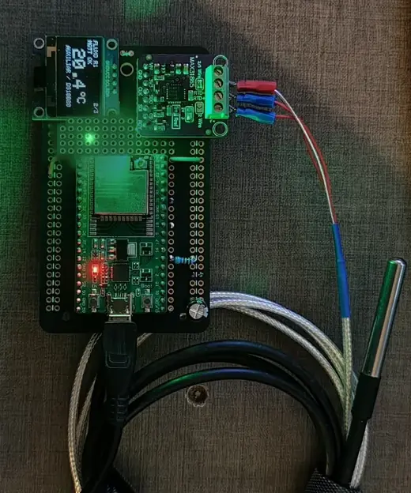

Prancheta, duas vezes por dia
- Um desvio às 23h aparece, se aparecer, na segunda de manhã.
- Ninguém fica sabendo quando a geladeira para no fim de semana.
- O registro depende de alguém lembrar de anotar.
SÁB 13:00 → SEG 08:00 Quem está olhando a geladeira, a sala e o estoque?
Leitura a cada 30 segundos. Alerta no Telegram, no e-mail e no portal quando a temperatura ou a umidade sai do limite. Histórico por período para mostrar na fiscalização ou na auditoria.
Agende seu diagnóstico em Lages e região. Instalação presencial, sem custo nos 30 dias.
O que muda
A anotação manual continua valendo. O Fluxo cobre o intervalo entre uma anotação e outra, a madrugada e o fim de semana, e avisa quando algo sai do limite.
O alerta chegando
A geladeira passou de 8 °C às 23h42 e continuou acima por 5 minutos. Às 23h47 o Fluxo abriu o alerta no portal, mandou a mensagem no Telegram e o e-mail. Às 23h52, a responsável de plantão reconheceu pelo celular.
Às 19h10 alguém abriu a geladeira por 40 segundos e a leitura passou de 8 °C. Não houve alerta: a regra só dispara se o desvio continuar além da tolerância, definida com o responsável técnico na implantação.
Se um sensor deixa de enviar leituras, o Fluxo avisa. Silêncio não passa por normalidade.
Cena demonstrativa construída para esta página. Horários, leitura e nome são ilustrativos.
Onde o Fluxo trabalha
O mesmo sistema acompanha uma geladeira de termolábeis, uma sala de coleta ou uma câmara fria. Escolha o perfil mais próximo do seu: a dor, os pontos monitorados e a regra de exemplo mudam junto.
Farmácias · RDC 67/2007
Umidade alta no almoxarifado e calor na sala de manipulação aparecem entre uma anotação e outra. Na geladeira de insumos, o problema costuma aparecer de madrugada.
Regra de exemplo
SE umidade · almoxarifado > 70 % POR 30 min
ENTÃO alerta → portal + Telegram + e-mail
No piloto Limites e tolerâncias definidos com o responsável técnico na implantação.
Faixa de 2 a 8 °C. A sonda passa pela vedação da porta e o visor mostra a leitura do lado de fora.
Temperatura e umidade da sala, lidas a cada 30 segundos.
Umidade e calor que a prancheta não pega, principalmente no verão e nos dias de chuva.
Registro contínuo da sala onde ficam reagentes e amostras de referência.

Na tela
Capturas reais do portal Fluxo, com dados demonstrativos. Clique na imagem para ampliar.
Quantos sensores estão enviando, quando chegou a última leitura e se há algo fora do normal. Pelo navegador, no computador ou no celular.
Cada regra diz qual métrica, qual ponto e qual condição. Eventos, notificações e diagnóstico ficam em abas ao lado.
Valor atual, mínimo, máximo e média de cada ponto, com vários pontos no mesmo gráfico.
Últimas 24 horas, o fim de semana inteiro ou um período específico, em gráfico ou tabela. É o que você abre quando a fiscalização pergunta.
Lista de equipamentos com estado e horário da última leitura. Cada um se conecta com credencial própria e conexão criptografada.
Exigência e resposta
Em farmácias, o Fluxo apoia o registro exigido pela RDC 67 e complementa o controle manual. Em clínicas, laboratórios e câmaras frias, vale o mesmo: registro contínuo, alerta e histórico. O estado de cada item está ao lado, sem arredondar.
Calibração dos instrumentos e enquadramento regulatório seguem com o responsável técnico. O Fluxo não emite certificado de calibração.
Equipamentos Fluxo
Cada equipamento tem uma função. Todos mandam para o mesmo portal, com os mesmos alertas e o mesmo histórico. Hoje o diagnóstico usa os dois primeiros.

Para geladeiras, câmaras e freezers. A sonda entra pela vedação da porta e o visor mostra a leitura do lado de fora.
Na foto, a placa em bancada. Próxima etapa gabinete final.
Fica na sala, mede o ar e guarda as leituras quando a internet cai.
Mostra se um equipamento está ligado e avisa quando a energia cai.
Vibração e movimento de motores, compressores e bombas.
Temperatura, umidade e pressão em um equipamento compacto, para vários pontos por sala.
Saber se a máquina está ligada, parada, operando ou em falha.
Medido em operação
Equipamentos reais enviando para o portal em operação contínua. Cada número diz o que foi medido e quando.
81,8h
9.739 leituras seguidas, nenhuma faltando e nenhuma rejeitada, com temperatura e umidade.
24 a 27/09/2026 · Central · operação controlada
28quedas
As leituras ficaram guardadas no local durante cada queda e foram enviadas quando a conexão voltou.
mesma janela de 81,8 h
122,6h
40.442 leituras enviadas. Na janela de 24 h conferida, nenhuma faltando.
10 a 15/10/2026 · R1 + Central · operação controlada
30s
Cerca de 2.880 leituras por dia em cada ponto, no lugar de duas anotações.
configuração de operação da Central
Continuidade do registro e entrega das leituras ao portal, em um ambiente com uma Central e um R1. Não são certificado de calibração nem teste de carga.
Ficam com o responsável técnico. No diagnóstico, combinamos o que o seu procedimento exige e como o Fluxo complementa o controle manual.
Diagnóstico de 30 dias
Quanto custa refazer um lote, descartar o conteúdo de uma geladeira ou perder uma câmara de produtos? Você sabe essa resposta melhor do que nós. O diagnóstico mostra se esse risco existe na sua operação.
Entendemos sua rotina e escolhemos o ponto mais crítico.
Presencial, sem obra e sem furar equipamento. Limites definidos com o responsável técnico.
Portal, Telegram e e-mail funcionando na sua operação.
Olhamos juntos as madrugadas, o fim de semana e cada alerta.
Seguir ou não. Se não seguir, retiramos o equipamento sem custo.
Sobre a Officina 404
O Fluxo é desenvolvido pela Officina 404, em Lages (SC). Sensores, Central e portal são projetados em conjunto, o que simplifica a implantação e mantém um único responsável pela solução, do equipamento instalado ao histórico no portal.
Sensores, Central e portal projetados para trabalhar juntos. Um único ponto de contato para a solução inteira.
Mapeamento dos pontos críticos, instalação no local e limites definidos com o responsável técnico.
Acesso ao portal por usuário, credencial própria em cada equipamento e conexão criptografada.
Cada número publicado tem data e escopo. O que ainda não está pronto aparece como próxima etapa.
Dúvidas
No portal, no Telegram e por e-mail. Cada alerta pode ser reconhecido pela equipe, com nome e horário registrados, inclusive pelo botão no Telegram. Enquanto ficar aberto, chegam lembretes. O WhatsApp desta página serve só para falar com a equipe; ele não é canal de alerta.
Não. Cada regra tem um tempo de tolerância: o alerta só abre se a leitura continuar fora da faixa além desse tempo. Os limites e a tolerância são definidos com o responsável técnico na implantação.
As leituras ficam guardadas no local e são enviadas quando a conexão volta. Em 81,8 horas de operação contínua, o Wi-Fi caiu e voltou 28 vezes sem perda de leituras. O R1 mostra no visor o estado da conexão.
Não. A sonda do R1 passa pela vedação da porta e o equipamento fica do lado de fora. Nas salas, a Central é fixada na parede, sem obra.
Não. Começamos pelas farmácias de Lages, mas o mesmo sistema acompanha clínicas, laboratórios, câmaras frias e estoques climatizados. Muda o ponto monitorado e a faixa; o portal, os alertas e o histórico são os mesmos.
Para o diagnóstico, levamos o equipamento. Se você já tem sensores, avaliamos se eles conseguem enviar dados para o Fluxo.
Não prometemos isso. Em farmácias, o Fluxo apoia o registro exigido pela RDC 67 e complementa o controle manual: registra temperatura e umidade de forma contínua, guarda o histórico e documenta alertas e reconhecimentos. Calibração e enquadramento seguem com o responsável técnico.
No portal, você consulta qualquer período em gráfico e tabela. No diagnóstico, a equipe entrega o relatório do período. A exportação de relatório direto pelo portal é uma próxima etapa.
O valor é apresentado ao fim do diagnóstico, de acordo com o número de pontos. Durante os 30 dias não há custo, e você não tem obrigação de seguir.
Não. As capturas são do portal real, com dados demonstrativos. A cena do sábado e a curva do topo também são demonstrativas.
Agendar o diagnóstico
Agende seu diagnóstico em Lages e região. Respondemos em horário comercial.
Monte a mensagem e abra no WhatsApp. Nada é enviado sem você confirmar lá.